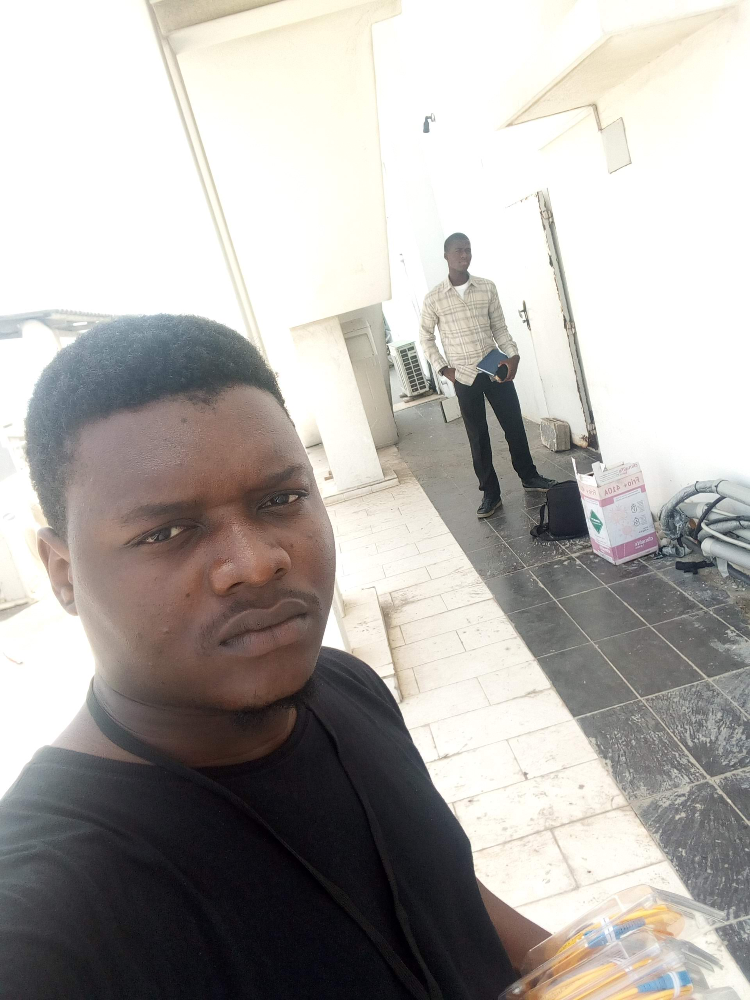
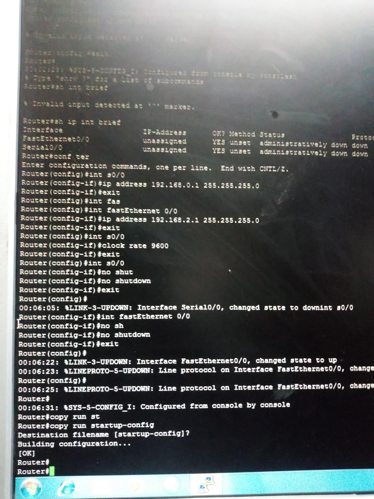
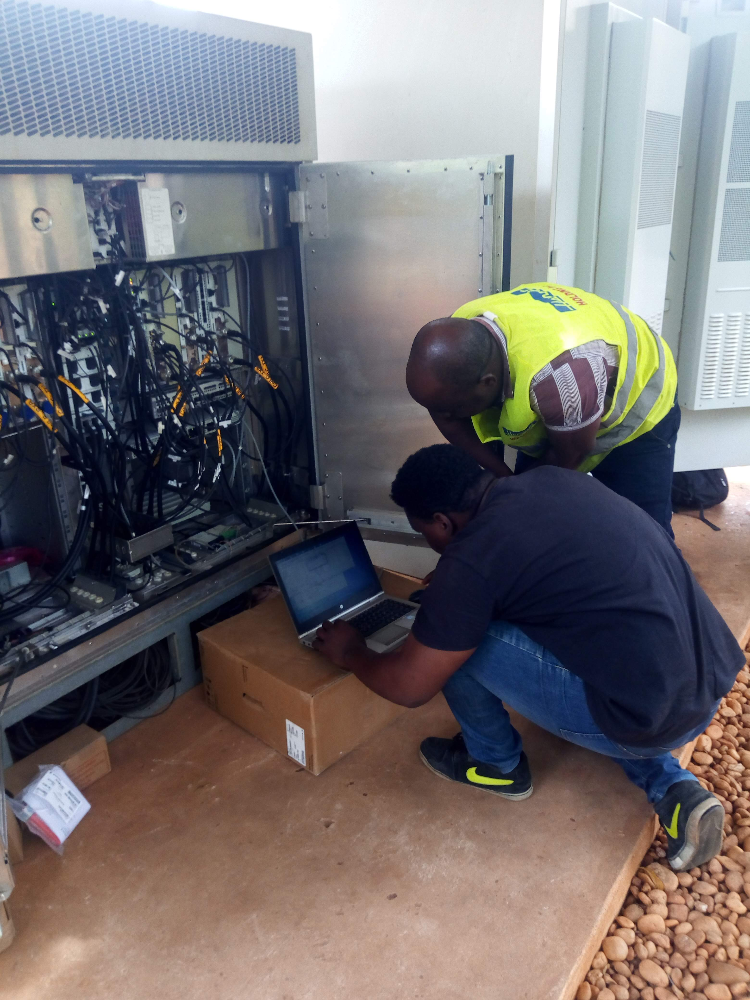
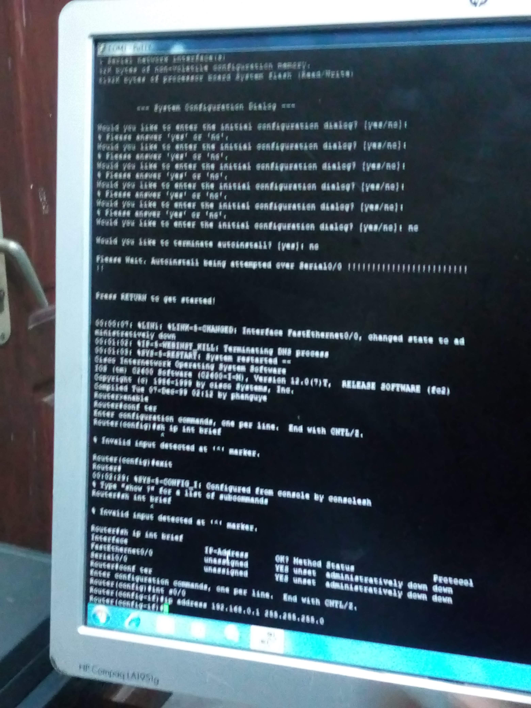
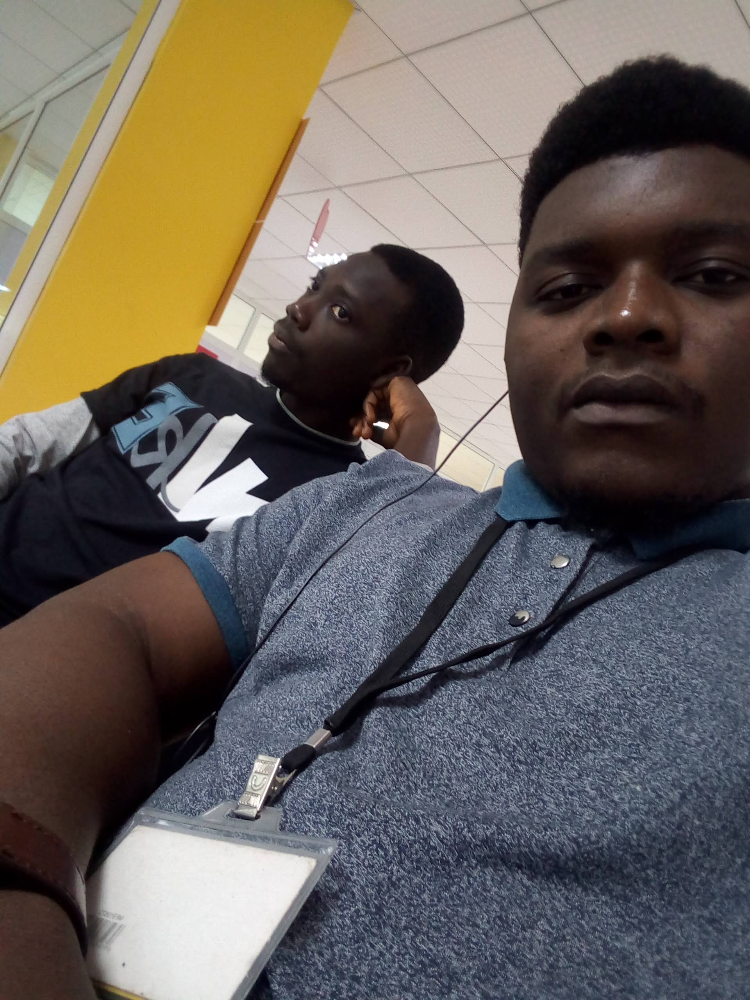

Eulèche S. AKPOVI
Administrateur systèmes
et réseaux
Administration Windows/Linux • Réseaux IP • Supervision et support informatique
À propos
Administrateur systèmes et réseaux, je travaille sur le maintien en condition opérationnelle des environnements informatiques, leur supervision et l’assistance aux utilisateurs. Mon expérience couvre les systèmes Windows et Linux, les réseaux IP et les services d’infrastructure d’entreprise.
Titulaire d’une licence professionnelle en systèmes, réseaux et sécurité informatique (2019), je poursuis un Master 1 en sécurité informatique. J’ai plus de quatre ans d’expérience en administration et support IT, avec une attention particulière à la disponibilité, au suivi des incidents et à la documentation.
Compétences techniques
Systèmes
- Windows, Windows Server, Ubuntu et Rocky Linux
- Active Directory, comptes utilisateurs et stratégies GPO
- Serveurs de fichiers, DNS, messagerie et sauvegardes NAS
- Virtualisation : Proxmox et Hyper-V
Réseaux
- Réseaux LAN, TCP/IP, adressage IPv4, DNS et DHCP
- Commutation et routage : VLAN, STP, OSPF, BGP et EIGRP
- VPN IPsec/SSL, pare-feu UFW et sécurisation du LAN
- Configuration de switches et routeurs, dont MikroTik
Supervision et exploitation
- Surveillance et alertes avec Zabbix et PRTG
- Automatisation et analyse de journaux avec PowerShell
- Scripts Python et notions d’Ansible
- Suivi des incidents avec Jira et GLPI ; Wireshark, SQL et PostgreSQL
Expériences professionnelles
Administration et supervision des systèmes
GOELERS SOLUTIONS AFRICA — Assistant SysAdmin, 2024–2026. Suivi des équipements et services critiques avec PowerShell et Zabbix, analyse des journaux et traitement des alertes. Gestion des serveurs de fichiers, DNS et messagerie, des sauvegardes Synology, du support à distance et des tickets Jira.





Déploiement et sécurisation du réseau local
GOELERS SOLUTIONS AFRICA — Technicien systèmes et réseaux, 2022–2024. Participation à la mise en place du réseau local et de sa baie, au raccordement des postes et à la configuration des switches et du routeur WAN. Administration des adresses IP, des accès Active Directory et des stratégies GPO ; contribution à la segmentation et à la documentation des interventions.
Support IT et services d’entreprise
LIGHT ENGINEERING — Technicien support IT, 2023–2024. Contribution au déploiement des postes Windows et à la mise en service d’un domaine, d’un serveur de fichiers et d’un serveur IIS pour une application ERP. Installation d’un NAS Synology et organisation de la synchronisation des données.
Autres expériences
Technicien réseau indépendant (2020–2022) : gestion de serveurs VPS, interventions de câblage et configuration du routage OSPF/EIGRP. MTN Bénin (2019) : appui à la maintenance de systèmes de transmission et au câblage réseau. Média Contact Bénin (2019–2020) : vérification de données d’abonnés dans une base VLR.
Me contacter
Bénin